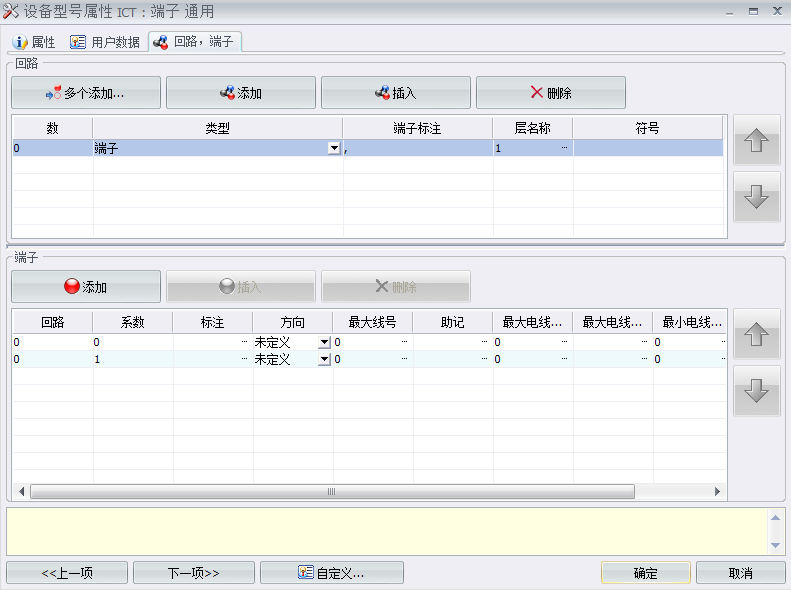
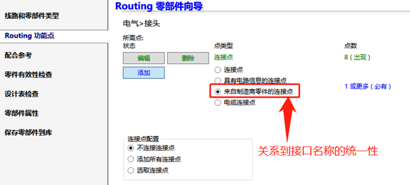

Electrical自定义符号
图形
导入导出dwg文件：
【导入DWG文件】-选择文件-定义dwg图纸的类型（首页，原理图，方框图等）-
新建符号：使用现用符号模板新建
1、右键符号-符号-添加至数据库-新建-设置符号属性，
标注
2、【数据库】-【符号数据库】-找到新建符号双击打开-对符号和注解修改
连接点
3、【编辑符号】-【多个连接点】-空格鼠标点击（用于截断电线）
3D零件连接点：
- 含回路信息的 CPoint：
此选项允许您手动为电线或电缆芯创建连接点。您必须输入回路号、连接点号（参见连接点定义一章），然后在图形区域中选择草图点。
- 来自制造商零件的 CPoint：
此选项允许您根据制造商零件的回路定义为电线或电缆芯创建连接点。单击浏览从制造商零件管理中选择设备型号，然后在列表中选择所需型号。在列表中选择材料端子，然后在图形区域中选择相应的草图点、边线或圆柱曲面。
- 电缆 CPoint：2022新功能电缆连接点
此选项允许您为电缆创建连接点。它与电缆绝缘件切割点对应。您必须在要创建连接点的面上创建一个平行平面。在图形区域中选择草图点、边线或圆柱曲面


Electrical自定义设备
添加设备型号
属性
用户数据
预览的可编辑字段？那关联的字符串名称是什么？
回路端子
“回路_系数”将成为3D“接线点”命名的关键，你需要保证他们是同名称。否则，你可能会遇到找不到来着2D原理图的某某“回路_系数”提示。
以端子零件回路举例：1回路里有进出的两个端子接口，即如图所设。
3D模型的连接点设置：
Routing功能点
这里就是设置3D部件的“连接点”有多种方式，常用第3种“来着制造商零件的连接点”，它会同步2D原理图的部件“回路_系数”，确保名称一致。当然，选择对的连接点还是需要你人为确定。
配合参考
有效性检查
设计表
零部件属性
保存
新建部件库：
【数据库】-【设备型号管理器】-添加-填写属性-选择3D零部件-接口号。。。